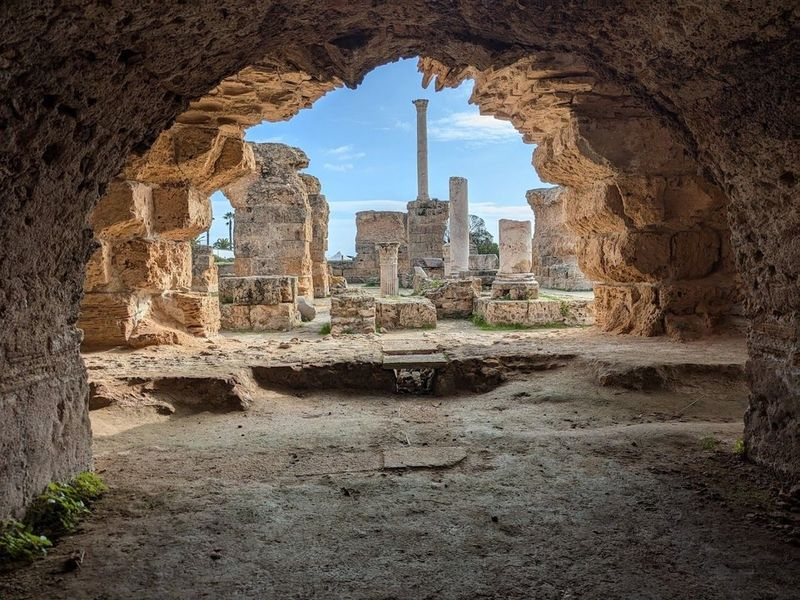
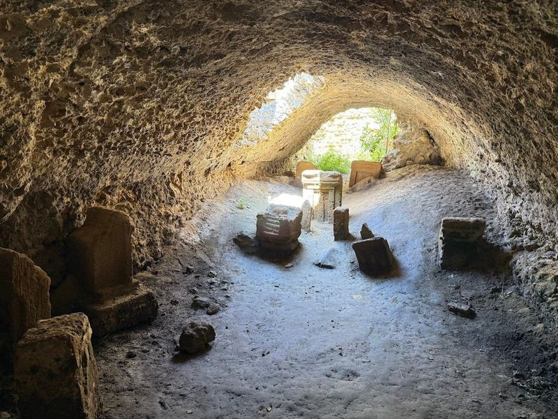
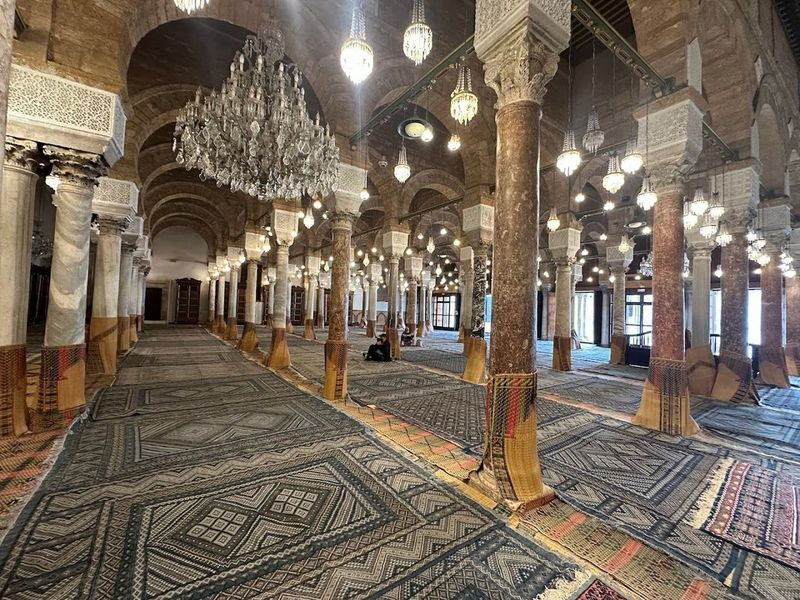
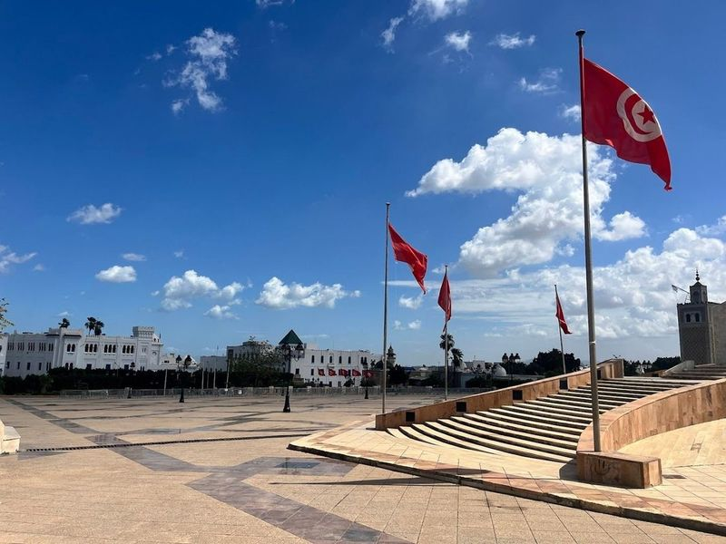
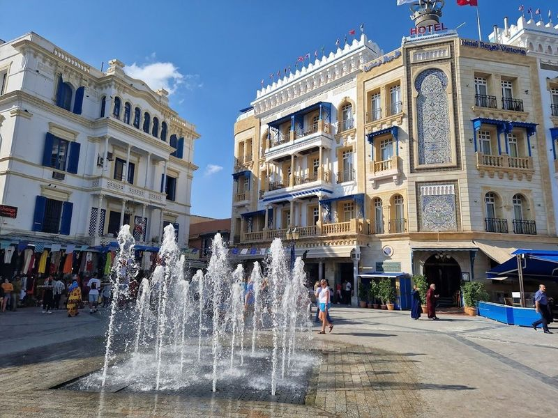
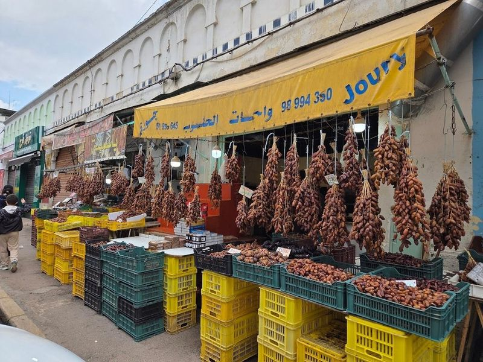
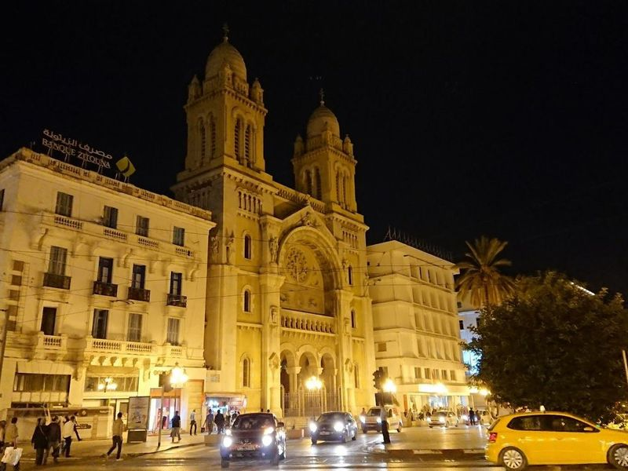
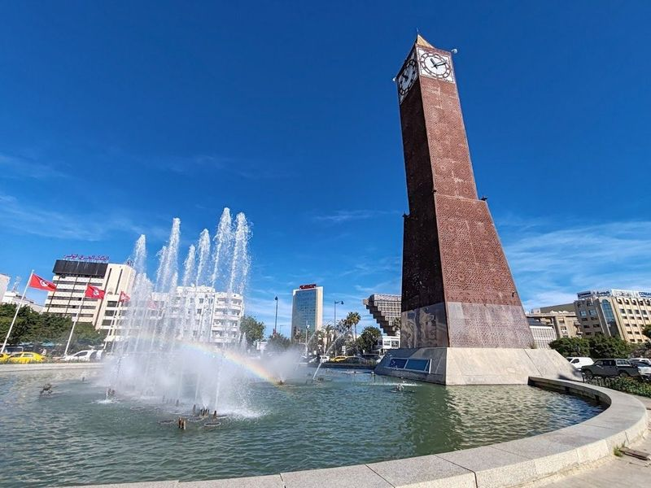
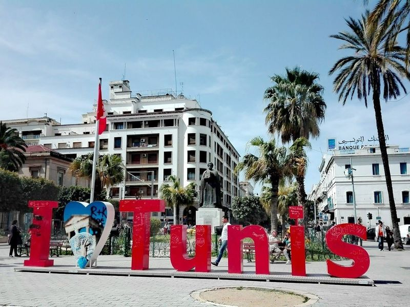
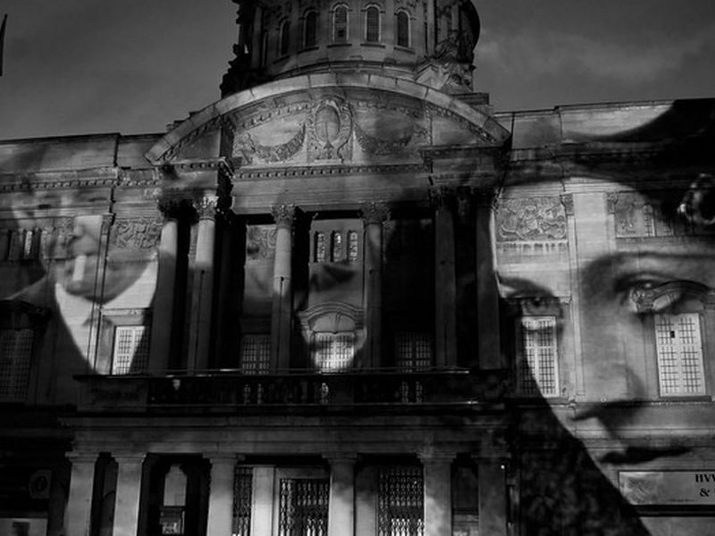

Explore Tunis
A Brief History
Tunis developed around the seventh-century Zitouna Mosque as the hub of Ifriqiya under Aghlabid and Ottoman rule. The medina's souks, madrasas, and Ottoman palaces face French-built avenues from the protectorate era. Nearby Carthage and Roman Antonine baths link the capital to Punic, Roman, and Islamic Mediterranean history. Bardo Museum mosaics and seaside Carthage ruins extend medina souks along the Gulf of Tunis.
Attractions Map
Top Sights & Activities

Baths of Antoninus
The Antoninus Baths in Carthage, Tunisia are a significant historical site dating back to the 2nd century. The complex is part of an archaeological park and is one of five Roman ruin sites worth exploring in the area. Consider purchasing a combination ticket that includes all ten historic sights in Carthage for a reasonable price. The Antoninus Baths are particularly impressive as they are the largest Roman baths outside of Rome.

Salammbo Tophet Sanctuary
The Basilique de Saint Cyperien is an archaeological site of great historical significance. Situated in France, this remarkable place holds cultural and religious importance. The basilica dates back to ancient times and showcases fascinating architectural styles from various periods. With its intricate design and majestic structure, it stands as a testament to the rich past of the region.

Zitouna Mosque
Ez-Zitouna Mosque, the oldest in Tunisia, is a historic site and revered Islamic university with a 141-ft. minaret. In the Medina, it was originally constructed in the 8th century during the Aghlabid dynasty's rule and has since undergone several expansions, each contributing to its unique architectural style. While visitors cannot enter the mosque itself, they can admire its Moorish, Ottoman, and Andalusian influences from a distance.

Kasbah Square
Kasbah Square, a prominent landmark in the heart of Tunis, is an expansive and serene space that beautifully blends history with modernity. Nestled near the bustling Medina, this square features the impressive Kasbah Mosque and serves as a central hub for government buildings, including the City Hall of Tunis. The square is adorned with a striking monument symbolizing Tunisia's fight for independence, making it not only a gathering place but also a site of cultural significance.

Bab al-Bhar
Bab al-Bhar is listed among principal sites for Tunis within Tunisia. Municipal and regional heritage listings document its place in the historic centre and travellers routes through Tunis. Bab al-Bhar is listed among principal sites for Tunis within Tunisia.

Central Market of Tunis
The Central Market of Tunis, also known as Marche Central, is a hub that offers an authentic taste of local life. This bustling market features an array of stalls brimming with fresh produce, aromatic spices, and seafood. The airy hall adorned with wooden rafters creates a delightful atmosphere where visitors can immerse themselves in the colorful sights and enticing smells.

Saint Vincent de Paul Cathedral
The Cathedral of St Vincent de Paul and St Olivia of Palermo, inaugurated in 1897, stands as a remarkable testament to Tunisia's colonial past. Nestled on Avenue Habib Bourguiba, this neo-Romanesque architectural gem is the largest surviving structure from that era. Its striking yellow-and-white facade features a golden mosaic depicting Jesus alongside two angelic figures playing trumpets. This grand church honors St.

Tunis Clock Tower
Avenue Habib Bourguiba Clocktower, also known as Big Ben, is a significant historical landmark in the heart of Tunis, Tunisia. Built to commemorate former President Zine El Abidine Ben Ali's assumption of power in 1987, this 38-meter-high clocktower stands tall at one end of the bustling Avenue Habib Bourguiba. The avenue itself is a boulevard named after the country's first President and holds great cultural and historical importance.

Ave Habib Bourguiba
Avenue Habib Bourguiba is a and lively thoroughfare in the heart of Tunis, characterized by its beautiful tree-lined promenade and art deco and art nouveau architecture. This street has a rich history, having served as a central hub for protests during French colonial times when it was known as Avenue de la Marine.

City of Culture
City of Culture is listed among principal sites for Tunis within Tunisia. Municipal and regional heritage listings document its place in the historic centre and travellers routes through Tunis. City of Culture is listed among principal sites for Tunis within Tunisia.